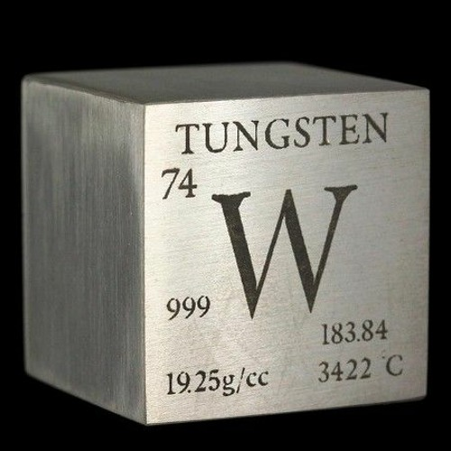
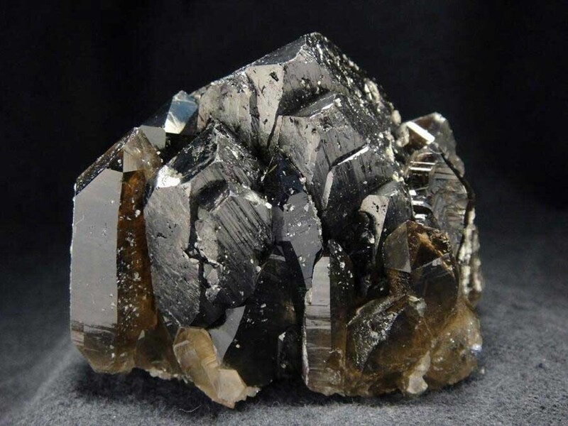

Вольфрам
Вольфра́м (химический символ — W, от лат. Wolframium) — химический элемент 6-й группы (по устаревшей классификации — побочной подгруппы шестой группы, VIB) шестого периода периодической системы химических элементов Д. И. Менделеева с атомным номером 74.При нормальных условиях вольфрам — твёрдый, тяжёлый блестящий металл серебристо-серого цвета. Обладает немного более высокой плотностью, чем металлический уран.Вольфрам — самый тугоплавкий из металлов. Относится к переходным металлам

Вольфрам открыт и выделен в виде оксида WO3 в 1781 г. К. Шееле при обработке кислотами минерала, называемого ныне шеелитом. В 1783 г. испанские химики братья де Элуяр выделили WO3 из минерала вольфрамита и, восстановив WO3 углеродом, впервые получили металл, названный ими Вольфрам (по названию исходного минерала). В США и некоторых других странах элемент называется tungsten (от швед. – тяжёлый камень).
Содержание вольфрама в земной коре 1·10–4 % по массе. В свободном виде в природе не встречается. Известно около 15 собственных минералов вольфрама, большинство из них относятся к природным вольфраматам; наибольшее промышленное значение имеют вольфрамит (Fe,Mn)WO4 и шеелит CaWO4.

Процесс получения вольфрама проходит через подстадию выделения триоксида WO3 из рудных концентратов и последующем восстановлении до металлического порошка водородом при температуре ок. 700 °C. Из-за высокой температуры плавления вольфрама для получения компактной формы используются методы порошковой металлургии: полученный порошок прессуют, спекают в атмосфере водорода при температуре 1200—1300 °C, затем пропускают через него электрический ток. Металл нагревается до 3000 °C, при этом происходит спекание в монолитный материал. Для последующей очистки и получения монокристаллической формы используется зонная плавка.До 30 % получаемого вольфрама используют в производстве легированных (главным образом инструментальных) сталей, важнейшие из которых – быстрорежущие – содержат 8–20 % W. Примерно 50–60 % вольфрама расходуется на производство износостойких, жаропрочных и твёрдых сплавов (последние обычно содержат WC, а также Co). Чистый вольфрам применяется в электротехнике, радиоэлектронике, рентгенотехнике (для изготовления нитей накаливания электроламп, электродов рентгеновских трубок, нагревателей высокотемпературных печей, катодов генераторных ламп, сеток, подогревателей катодов и пр.).